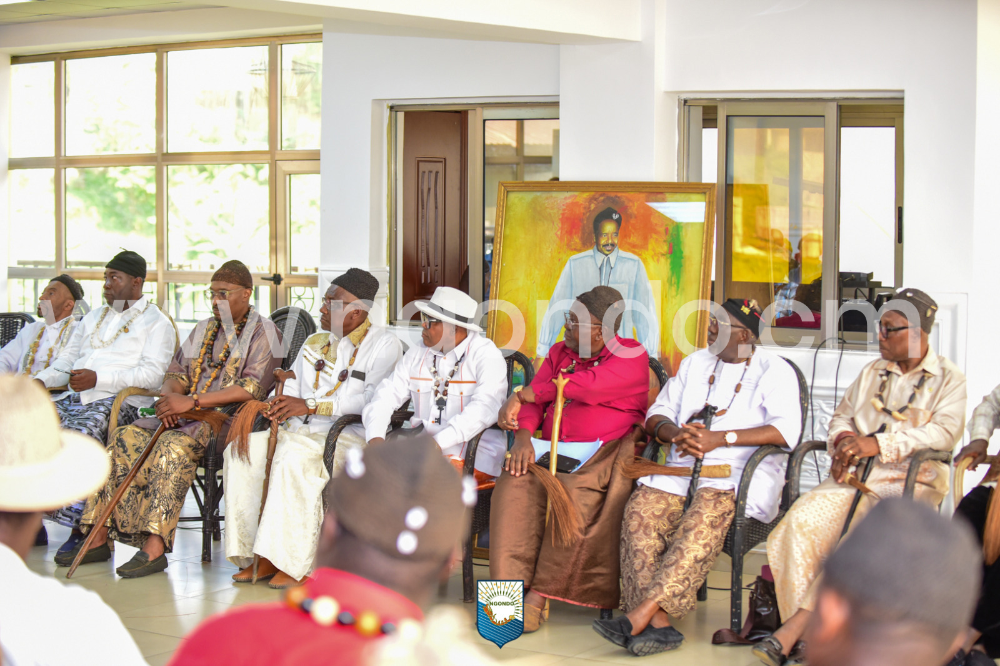
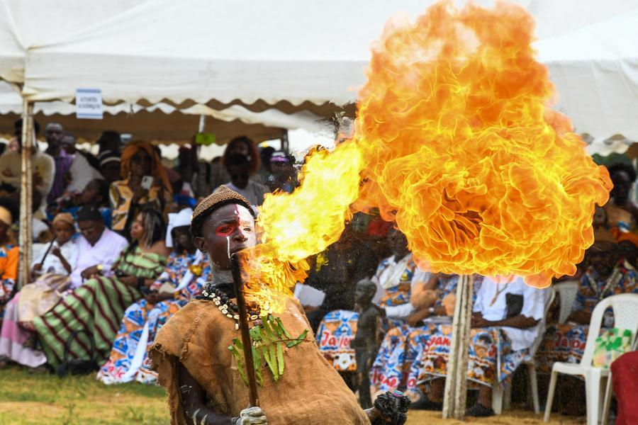
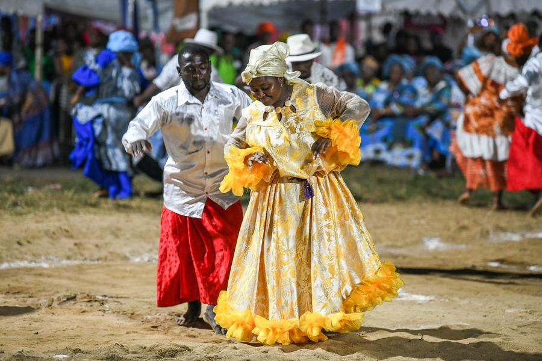
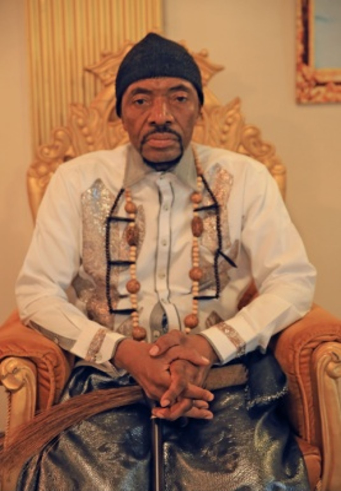

Caravane 2026


Partenariat
NGONDO et FNE signent une convention pour l'emploi des jeunes Sawa
24 juin 2026

Programme
Thème 2026 : L'Anticipation et la Vigilance — appel du Président
Juin 2026

Culture
Mangando 2026 : les danses Sawa s'invitent dans les rues de Douala
NGONDO 2024

Éditorial
S.M. Mbappe Bwanga : « Jajongwanele o Kotome » — le message du Président
Kalat'a NGONDO 2025

Compétition
Grande course de pirogues : 12 cantons en lice sur le Wouri le 6 déc.
6 décembre 2026